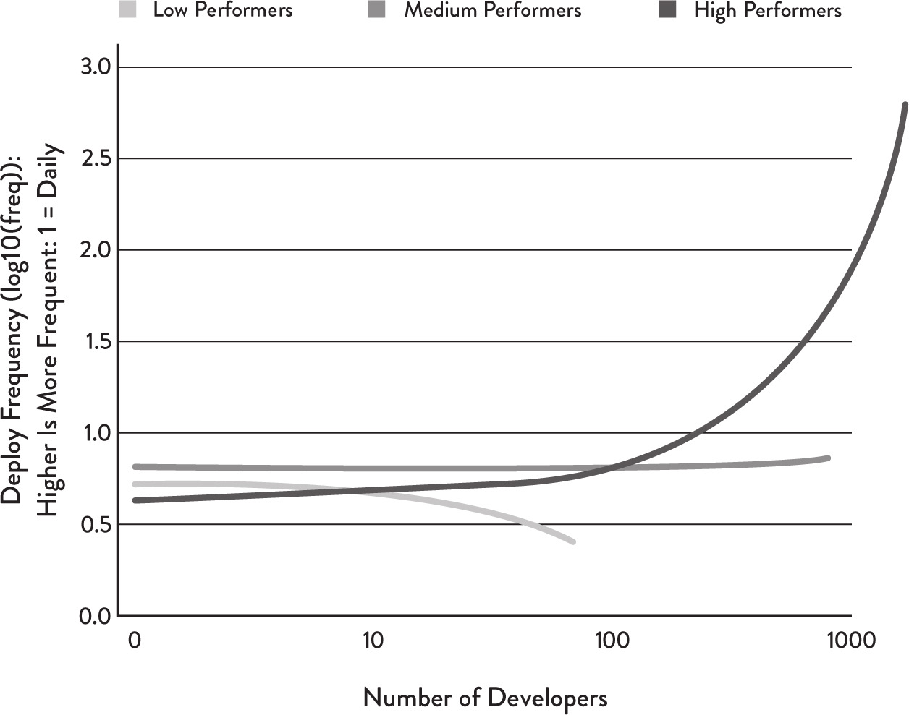

# devops and continuous delivery a discussion with Tradify
# hello. I'm Luke <aside class="notes"> I've been fortunate to have a career working on a variety of interesting problems at interesting times. I find the following fascinating: 1. the productivity of software teams and how best to deliver value 2. the optimal way to structure and architect software systems and how this affects 1. I have: - worked on web and fat client systems for government - worked on the facebook for windows phone product team - worked with azure in the early days of cloud computing - worked on operations/monitoring for a bank - worked on lots of cloud saas products including joining Xero as it scaled outside of ANZ and migrated to AWS - worked on an early stage startup uneeq in the conversational AI space </aside>
DORA and Accelerate metrics
deployment frequency
lead time
change failure percentage
time to restore
Continuous delivery enables evolutionary architecture

Continuous delivery reduces waste
Continuous delivery does not compromise stability
thank you.